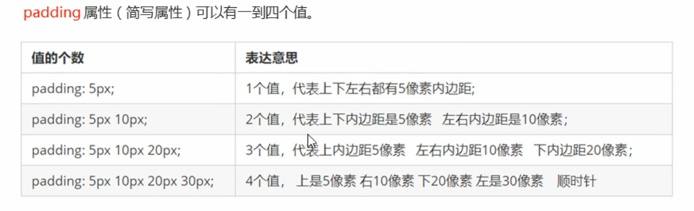
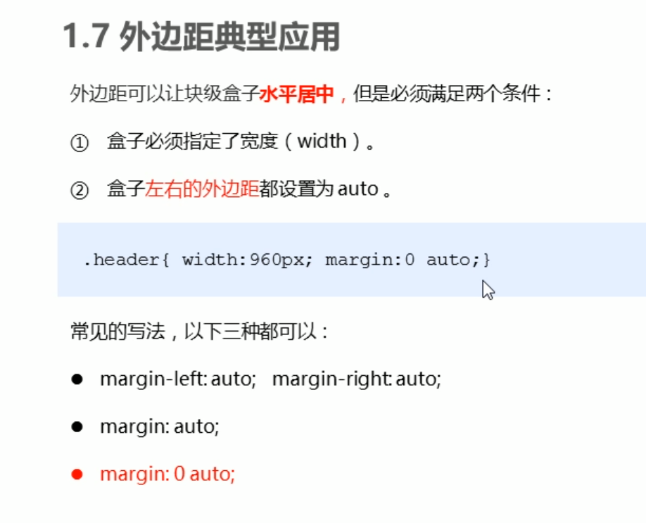

边框(border)
border : border-width(边框宽度) || border-style(边框样式) || border-color (边框颜色)
可以使用简写如:border: 2px solid #fff;(没有前后顺序)
合并边框
border-collapse: collapse;
边框分开写法
注意：采用简写可以更好的控制四个边框的不同样式
如:
/* 四条边框不同颜色，不同粗细*/
.div1{
width: 300px;
height: 300px;
border-top: #0000FF 10px;/* 上+边框 */
border-left: #FF0000 20px;/* 左+边框 */
border-right: #FF6F00 30px;/* 右+边框 */
border-bottom: #FFC0CB 40px;/* 底部（下）+边框 */
/* 边框宽 */
/* border-width: 2px; */
border-style: solid;/* 边框样式 */
}
盒子模型内边距（padding）
padding-top 上
padding-bottom 下
padding-left 左
padding-right 右
如：
盒子内容是content 盒子内容是content 盒子内容是content 盒子内容是content
padding属性简写（重要）

盒子模型外边距（margin）
margin-top 上
margin-bottom 下
margin-left 左
margin-right 右
margin属性简写（重要）
margin（外边距）简写跟padding一样，可以直接参考padding（内边距）
让块元素盒子水平居中
外边距（margin）可以让盒子水平居中，但是得满足两个条件：
1.盒子必须指定宽度（width）
2.盒子左右边距都设置为auto
.div1{
width:300px;
margin:0 auto;(上下边距为0，左右边距为auto)
}

让行内元素或者行内块元素水平居中
直接给（父级）添加text-align:center;即可
使用嵌套块元素垂直外边距塌陷问题
对于两个嵌套关系（父子关系）得块元素，父元素有上边距同事子元素也有上边距，此时父元素会塌陷
解决方案：
1.可以为父元素定义一个上边框
2.可以为父元素定义一个内边框
3.可以为父元素添加overflow:hidden;
案列：
css代码
/* 使用嵌套块元素垂直外边距塌陷问题（按照这种写法就会倒是两个盒子一起下移） */
.div3{
width: 500px;
height: 500px;
background-color: #FF6F00;
margin-top: 50px;/* 让盒子外边距下移50px */
/* 解决方案1:可以为父元素定义上边框（或者四个边都行） */
/* border: 1px solid transparent; */
/* 解决方案2:可以为父元素定义上内边框 */
/* padding: 1px; */
/* 解决方案3:可以为父元素添加overflow:hidden; */
overflow: hidden;/* 这种方法不会改变盒子原本大小 */
}
.div4{
width: 200px;
height: 200px;
background-color: pink;
margin-top: 50px;/* 让盒子外边距下移50px */
}
清除内外边距 也是css的第一行代码
/* 清除内外边距 也是css的第一行代码*/
*{
margin: 0;/* 清除外边距 */
padding: 0;/* 清除内边距 */
}